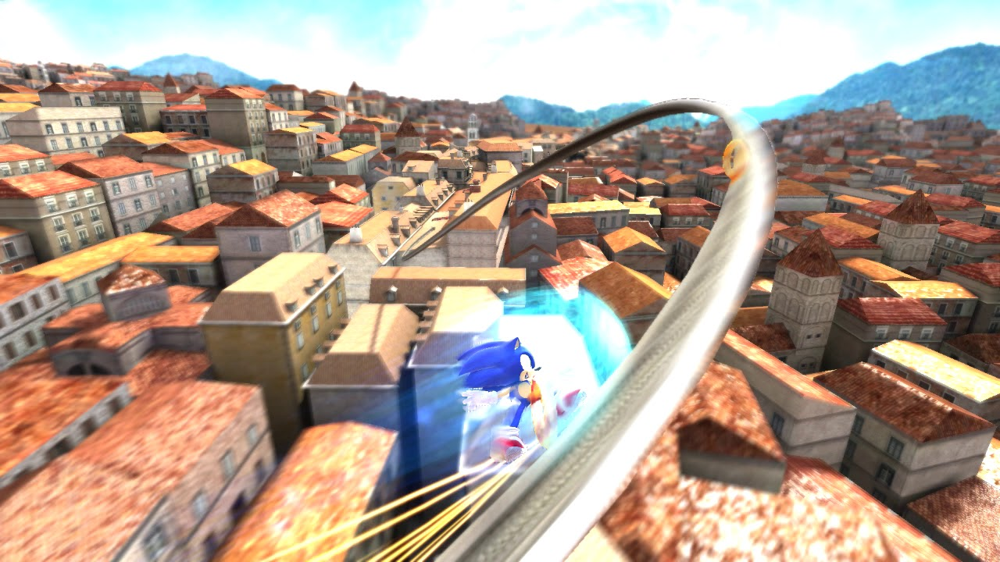
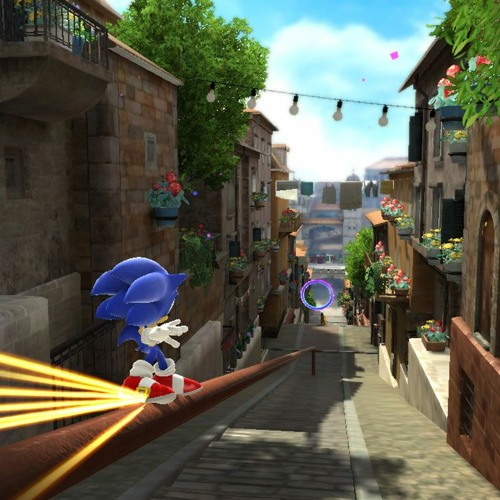

Rooftop Run - Day úr Sonic Unleashed (2009)
Rooftop Run er uppáhald lagið hans Tomoyas sem hann samdi sjálfur. Auk þess er Sonic Unleashed uppáhalds Sonic leikurinn hans!
Það er greinilegt að Tomoya skemmti sér vel við að semja fyrir Sonic Unleashed, enda er þessi leikur talinn vera einn af bestu Sonic leikjunum. Tomoya var enn og aftur sound director og stóð sig vel eins og alltaf.
Smá um leikinn
Sonic Unleashed kom þremur árum eftir Sonic 2006, sem hafði fengið mjög slæmar einkunnir.
Sonic Unleashed var mjög metnaðarfullur leikur með magnaðri borðahönnun,
geðveikum cutscenes og nýjum gameplay stíl sem við köllum boost formúluna, en þá getur maður hlaupið alveg rosalega hratt og þarf að bregðast við hlutum og viðhalda hraðanum.
Sagan er ekki alveg jafn skrýtin og í Sonic 2006 en hún er samt smá furðuleg. Eggman klýfur jörðina til að frelsa skrýmsli að nafni Dark Gaia, og Sonic fær á sig bölvun sem breytir honum í var-gölt (werehog) á hverri nóttu. Were þýðir maður, sem gerir þetta ennþá furðulegra.
Sonic þarf að ferðast í mismunandi heimsálfur til þess að bjarga jörðinni og hvert borð er byggt á einhverjum alvöru stað.

Hvar spilar lagið?
Rooftop Run spilar í Spagoníu, ímynduðu landi í Evrópu sem er sagt vera nálægt Grikklandi. Spagonia er með mikið af gömlum og fallegum arketektúr. Í borðinu má sjá risastórann klukkuturn og loftbelgi svífandi út um allt.
Sonic hleypur ofan á húsþökum, í gegnum þröngar götur og meira að segja upp klukkuturninn. Eggman sendir loftbelg á eftir Sonic en Sonic sigrar loftbelginn á endanum með því að sparka vélmennum í hann.
Rooftop Run er talið vera eitt af bestu Sonic borðum allra tíma, og eftir að hafa horft á vídjó af borðinu er ég farinn að halda að það sé satt!
